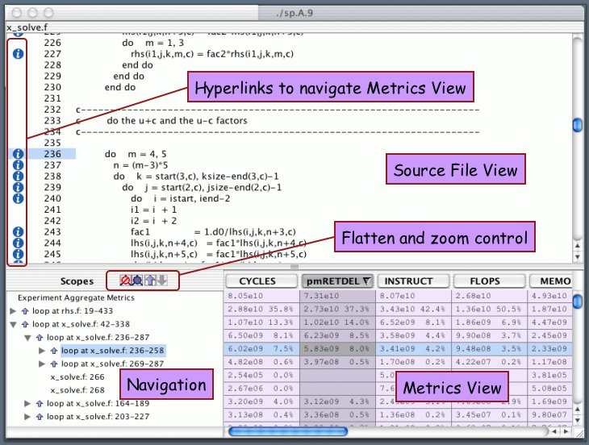
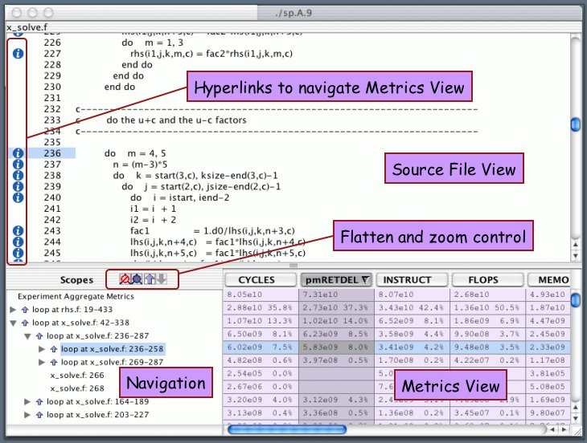

HPCToolkit: hpcviewer Screen Capture
A screen captured from HPCToolkit's hpcviewer performance data browser with major components annotated. The hpcviewer browser is written in Java and can be run anywhere.

Page last updated 9 Feb 2004
A screen captured from HPCToolkit's hpcviewer performance data browser with major components annotated. The hpcviewer browser is written in Java and can be run anywhere.

Page last updated 9 Feb 2004